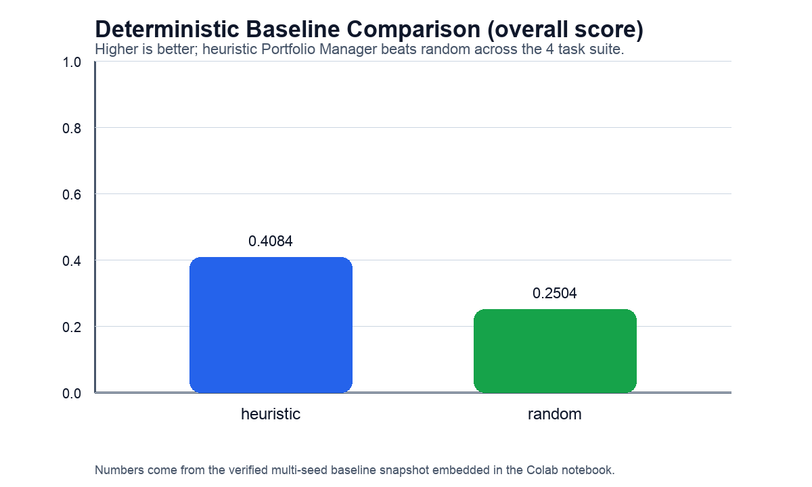
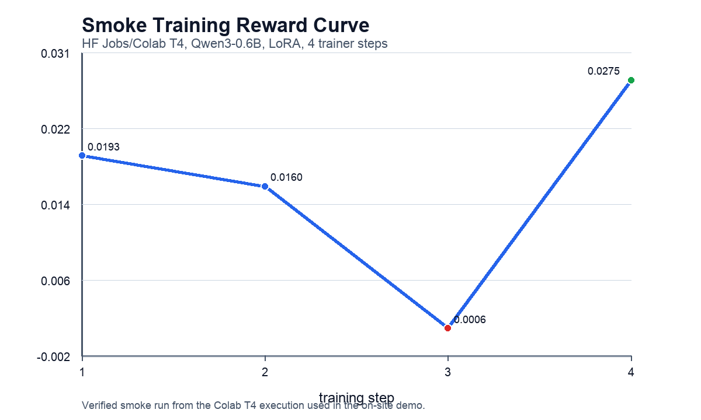

Slide 1
AI Investment Committee Environment
OpenEnv Theme #1 submission: a multi-agent professional workflow where a trainable Portfolio Manager learns to resolve disagreement between Research and Risk under partial observability and changing constraints.
- Not a toy market game or single-step allocator.
- Built to teach structured strategic coordination that LLMs still do poorly.
- Trainable through verifier-style rewards using OpenEnv + TRL + LoRA.
Slide 2
Why This Is Fresh
Capability gap
- Research and Risk can disagree.
- The PM must ask for information, not just react to a score.
- Hidden regimes and changing mandates force strategic adaptation.
Why it matters
- Underexplored in RL-for-LLM training versus games or static coding benchmarks.
- Close to real deployment settings: partially observable, multi-role, constrained.
- Defensible research question: can verifier-driven RL improve coordination under conflicting incentives?
Slide 3
Environment Design
Agents
- Portfolio Manager: only trainable agent
- Research Analyst: scripted, noisy but useful views
- Risk Officer: scripted, enforces concentration and mandate pressure
Task suite
guided_allocationresearch_risk_conflictregime_shift_recoverymandate_drift
Reward is decomposed into verifier-style components: return, drawdown, compliance, information usage, risk response, costs, and invalid-action penalties.
Slide 4
Baseline Evidence

Heuristic score0.4084
Random score0.2504
Score delta+0.1580
Task suite4 tasks
Slide 5
Training Evidence

Reward start0.0193
Reward end0.0275
Reward delta+0.0082
Best step4
Verified on a Colab T4 smoke run with Qwen/Qwen3-0.6B, HF TRL GRPOTrainer, and LoRA adapters.
Slide 6
Why It Matters
- This environment teaches structured multi-agent reasoning inside a realistic professional workflow.
- It shows end-to-end trainability: environment, rewards, baseline comparison, training curve, and judge-facing reports.
- It is a stronger Theme #1 fit than a generic finance benchmark because the hard part is conflict resolution under changing incentives.
Repo: github.com/anupamagarwal001/hackathon_submission
Space: huggingface.co/spaces/anupamagarwal001/amc_allocator_env